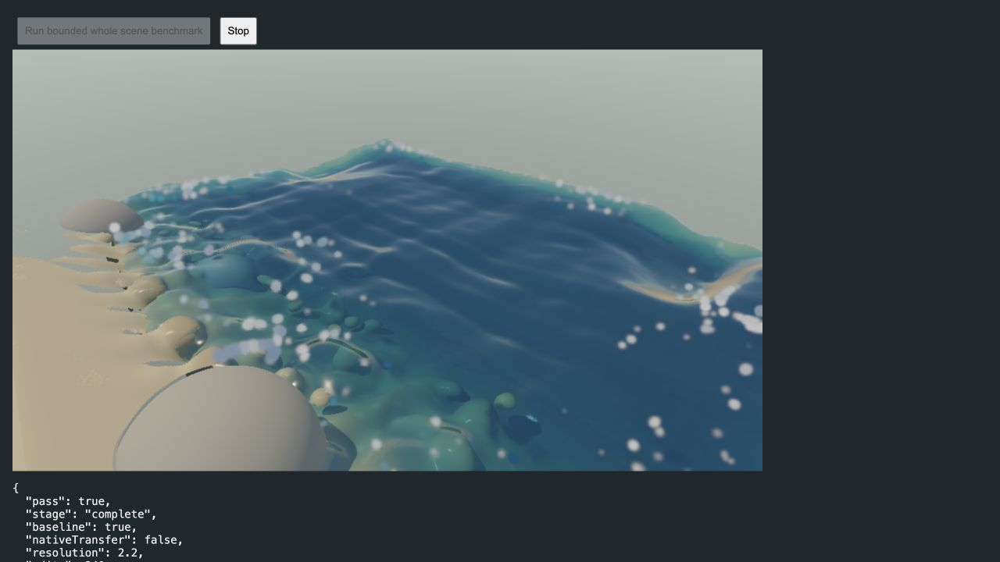
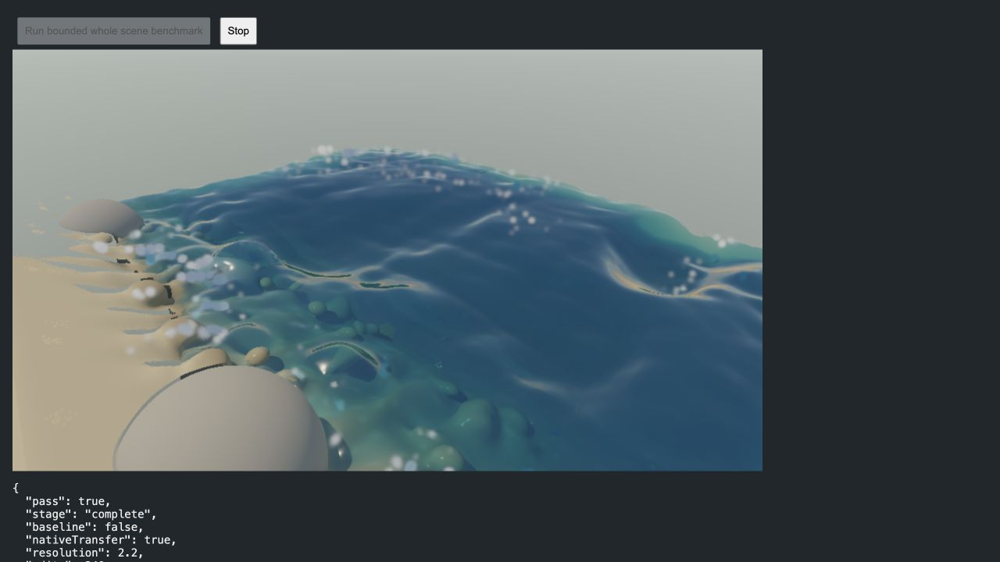
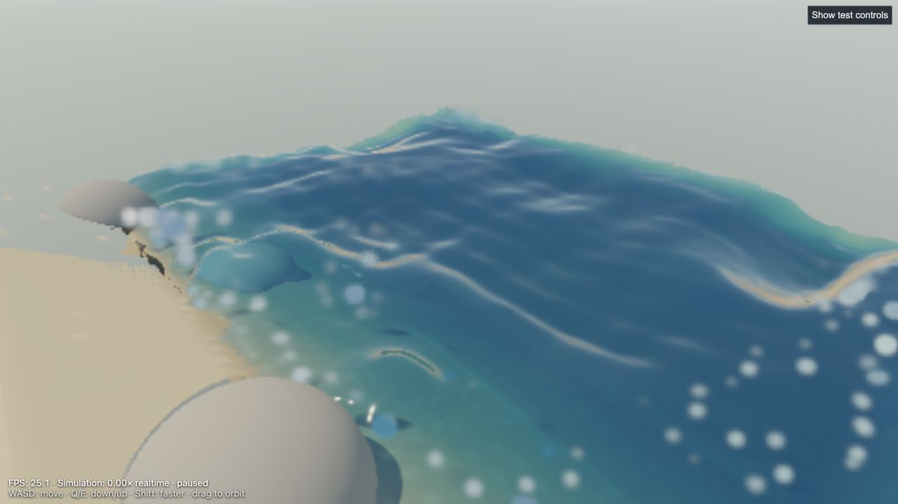

Measured 2026-11-07 on this Mac: AMD Radeon Pro 560X, ANGLE Metal, Codex in-app Chromium preview. CPU field / surface physics with WebAssembly; WebGL rendering, air and fine particles. No new GPU kernel or larger GPU queue.
Result: the heavy full-scene tests gained 10–12% FPS and about doubled simulation throughput. The normal page gained 57% simulation throughput after warmup; its 1.8% FPS difference is too small to claim a reliable FPS improvement there. This does not make the scene realtime, and frame variance did not uniformly improve.
| Workload | Average FPS | Simulated seconds / wall second | p95 frame time | Raw result |
|---|---|---|---|---|
| Fixed 960 × 540 full scene | 2.55 → 2.86 +12.4% | 0.170× → 0.366× +115.4% | 433 → 463 ms | Before / After |
| Same scene after 240 edits | 2.03 → 2.23 +9.6% | 0.136× → 0.266× +96.4% | 558 → 556 ms | Before / After |
| Normal beach page, warmed | 3.57 → 3.64 +1.8% | 0.233× → 0.367× +57.4% | 365 → 350 ms | Before / After |
The four changes have separate optimization checkboxes. Historical snapshot scenes retain their original behavior; the shared hooks are inert unless the live scene installs them.
The isolated throughput fixture uses the full live beach classes, 13,293 water samples, 110 m beach, resolution 2.2, wind 24 m/s, boulders, fixed 960 × 540 output, no tides or lens droplets. Twelve warmup frames precede 48 measured complete physics/render frames. Both versions await actual GPU completion; FPS includes physics, rendering, completion and frame scheduling. Baseline disables only this pass's four options. The clock mode supplies earned wall time rather than forcing equal step counts. It advances more physical time in the optimized run, so end images represent different water states.
The normal-page check uses its own existing 45-frame QA benchmark, default weather/tides, resolution 2.2 and the compatible drawing policy at 50% image scale. Each path was reset and warmed with a preceding 45-frame run. These are short local measurements, not a statistical guarantee for every view or RTX hardware. The initial normal-page pair showed 3.43 → 3.33 FPS and 0.224× → 0.320× simulation: improved simulation but no FPS gain. Initial before / initial after.
An earlier optimized edited run, before the final local-group refit refinement, reached 2.40 FPS / 0.280×; the final repeat reached 2.23 FPS / 0.266×. The table deliberately uses the final, slower repeat. Earlier trial. No claim that the refit change alone caused this run-to-run difference. New shader count stayed 54 → 54, and all bounded graphics runs completed without a context loss or browser error.
5,000 actual ground grab/place cycles conserved mass exactly. First 500 operations: median 0.155 ms, p95 0.466 ms. Last 500: median 0.134 ms, p95 0.291 ms. Matching grounded material consolidated into the terrain with no residual parcels or edit-history growth. This deliberately tests repetitive use, not an ever-growing sculpture.
Separate tests cover 400 partial sculpture grabs/drops, 160 carves, wet/dry layering and unsupported stock. Query-tree tests move 1,024 active parcels through 1,000 local edits without rebuilding or growing the 2,047-node tree, and compare 16,000 exact wind/contact probes plus moving-group probes against the original scans. The existing 12-cut-per-parcel rebuild policy remains in place.
Limit: an unlimited sequence of edits can reuse bounded local caches; unlimited simultaneously active geometric detail cannot have zero cost. Raised sculptures and materially different layers remain explicit. We do not silently erase those to meet a timing target.
No material, surface shading, covariance Gaussian, SH response or visual resolution change was introduced. The only visual scheduling change combines fine-particle updates across at most two bulk steps. The beach and edited fixture were inspected in the preview; these are qualitative checks, not pixel-identical image comparisons.



104 numerical/regression tests passed; production build passed. New transfer outputs are bit-for-bit equal to the JavaScript Float32 reference across changing particle counts, walls, held samples and out-of-domain samples. Two scheduled steps produce exactly the same bulk water, terrain, object, pressure, humidity and temperature state as two ordinary steps. Reset, failure, one-pending-job, slow-step and earned-time guards are tested.
The transcript of Mike Turitzin's dynamic SDF engine video was read. Relevant sections: edit-list cost (3:27), cached grid fields and smoothing tradeoffs (4:16), sparse surface bricks (8:44), dirty-region recomputation (13:09), edit-bounds BVHs (13:18), and separate low-resolution collision chunks (14:30). This pass applies the local-query/refit idea, alongside the existing live brick and collision caches. It does not claim to reproduce that engine's entire sparse-world architecture.
Next priority: profile large raised/carved sculptures, improve local dirty-brick updates and contact/neighbor work, and separate scene detail cost from edit-history cost. Pressure itself is only a few milliseconds now; another pressure rewrite is not the highest-value lead. The normal-page FPS result also points to remaining particle/GPU work. See development backlog.
Open the new bounded test, click Run once, and let it stop. Add &baseline=1 for the reference or &edits=240 for edited terrain. No graphics work occurs on that test's load. Do not run multiple GPU tests together. CPU-only edit soak: node tools/soak-live-edits.mjs.